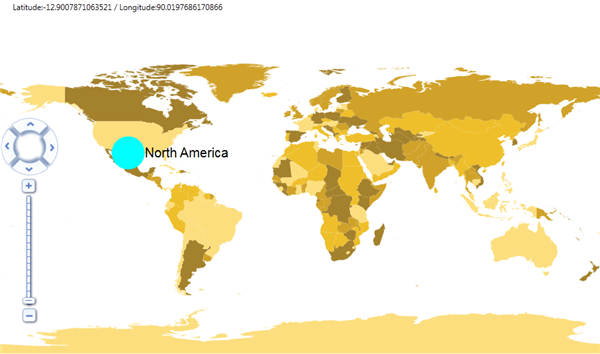

To add a symbol label, you have to create on object for MapSymbols and set the properties for the MapSymbols. Then add the created MapSymbols object to ShapeFileLayer’s SymbolCollection. This can be achived in the following methods:
· Through XAML
· Through Code Behind
Through XAML
Following code illustrates how to add symbol through XAML:
|
[XAML]
<maps:MapControl LayeredContent="{Binding ElementName=shapeControl}" x:Name="Map" NavigationControlPosition="Left" EnableColorPalette="True" ColorPalette="ColorPalette3" > <maps:MapControl.Layers> <maps:Layers> <maps:ShapeFileLayer Uri="LabelsAndSymbolsDemo.ShapeFiles.world.shp" x:Name="shapeControl" EnableLabel="{Binding IsChecked,ElementName=EnableLabel_ChkBox,Mode=TwoWay}" > <maps:ShapeFileLayer.SymbolCollection>
<!-- Map Symbols are added in Symbols Collections with Latitude and Longitude Values and with Customization Values -->
<maps:MapSymbols Latitude="40" Longitude="-113" SymbolDescription="North America" SymbolText="North America" SymbolLabelBackground="Transparent" SymbolLabelFontFamily="Arial" SymbolLabelFontSize="20" SymbolLabelForeground="Black"> <maps:MapSymbols.Symbol> <Ellipse Height="50" Width="50" Fill="Aqua"/> </maps:MapSymbols.Symbol> </maps:MapSymbols> </maps:ShapeFileLayer.SymbolCollection> </maps:ShapeFileLayer> </maps:Layers> </maps:MapControl.Layers> </maps:MapControl> |
Through Code Behind
Following code illustrates how to add label through code behind:
|
[C#]
// MapSymbols added in Symbols Collection with Latitude,Longitude values and, Customization values. Shape Control denotes the Object of the ShapeFileLayer
this.shapeControl.SymbolCollection.Add( new MapSymbols { Symbol = new Ellipse { Width = 50, Height = 50, Fill = new SolidColorBrush(Colors.Red) }, SymbolText = "North America", Latitude = 40, Longitude = -113, SymbolDescription = "North America", SymbolLabelBackground = new SolidColorBrush(Colors.Transparent), SymbolLabelFontFamily = new FontFamily("Arial"), SymbolLabelFontStyle = FontStyles.Italic, SymbolLabelForeground = new SolidColorBrush(Colors.Black), SymbolLabelFontSize = 20 });
|

Figure 32: Map Symbol Add through Code Behind and Xaml